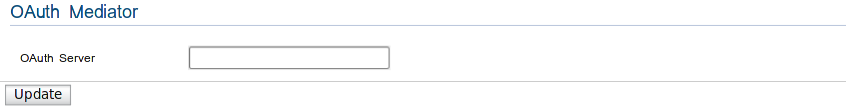

OAuth Mediator
The OAuth Mediator supports 2-legged OAuth. This by passes the RESTFull requests and authenticate users against WSO2 Identity Server

Entitlement Mediator Screenshot
You have the following configurations under the OAuth Mediator.
-
OAuth Server: Server url of the WSO2 Identity Server[e.g.:https://localhost:9443/services]
-
Username: A username of a user with enough privileges to access the WSO2 Identity Server OAuth Service
-
Password : The password of the above user